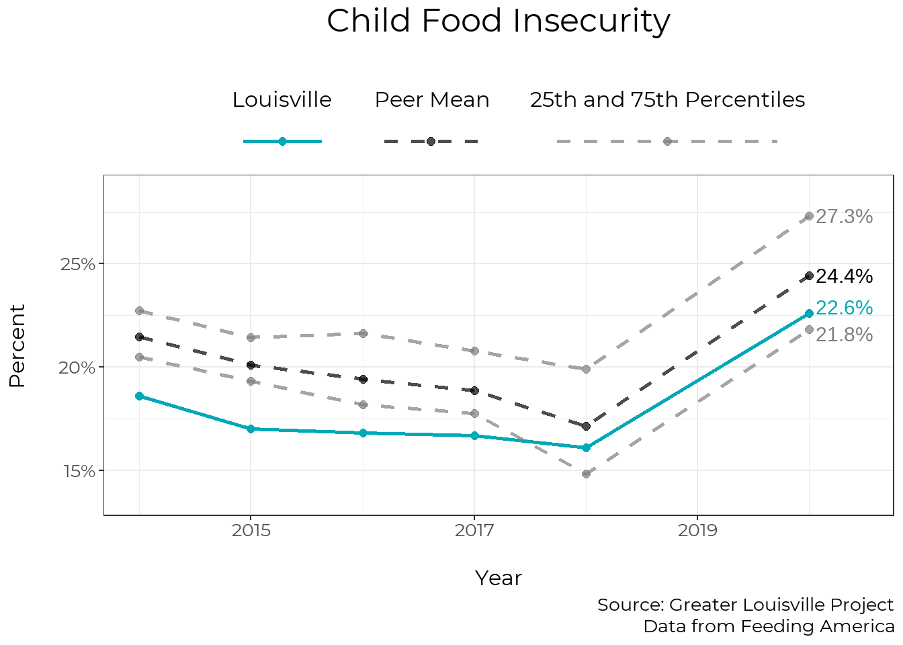
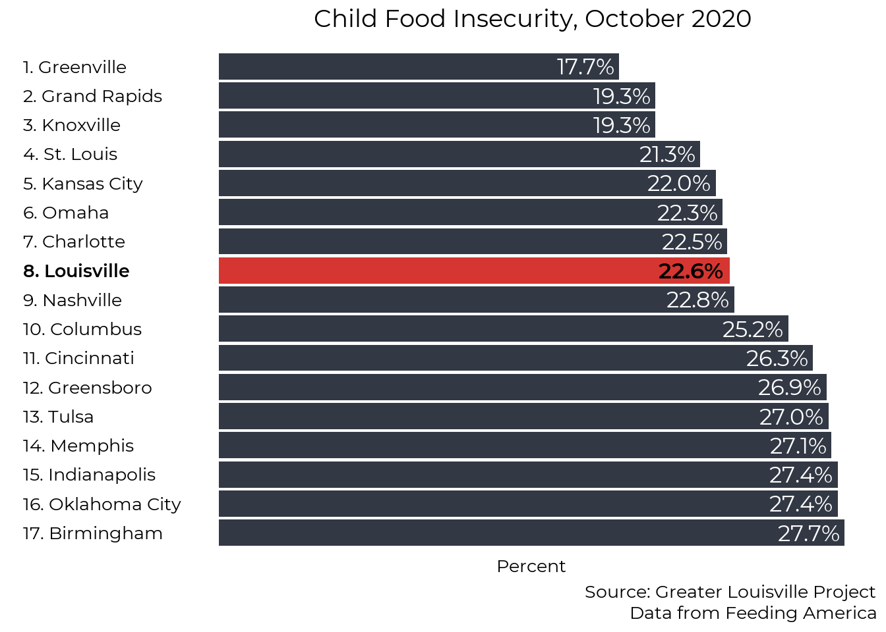
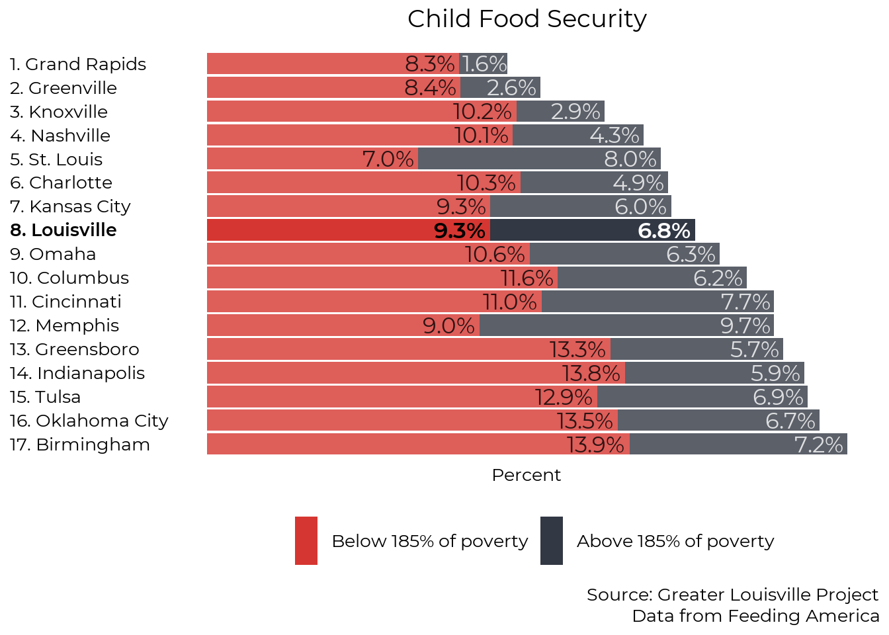

Chapter 6 Child Health
Child health is important for healthy child development and future success.
6.1 Adverse Childhood Experiences
Adverse childhood experiences are potentially traumatic events that occur in childhood. If you would prefer to skip past this section, you can do so by clicking “Child Food Security” in the sidebar.
Adverse Childhood Experiences (ACEs) include forms of abuse, neglect, and household dysfunction. According to the CDC, “ACEs can have lasting, negative effects on health, well-being, and opportunity.” In 2018, 71% of Louisville adults reported experiencing one or more ACEs during their childhood.
To understand the questionnaire and find your ACE score, you can click here.
ACEs data was collected by the Kentucky BRFSS survey using phone interviews throughout 2018. Kentucky Department for Public Health (KDPH) and the Centers for Disease Control and Prevention (CDC). Kentucky Behavioral Risk Factor Survey Data - Adverse Childhood Experiences 2015&2018. Frankfort, Kentucky: Cabinet for Health and Family Services, Kentucky Department for Public Health, [2018].
6.1.1 Impact of ACEs
Louisville adults who have experienced a high number of ACEs report much higher numbers of chronic disease than those who experienced no ACEs. The chart below compares the prevalence of several healh conditions among the two groups. The data is based on the health status of current adults based on the number of ACEs they report having experienced as a child.
Compared to adults who experienced no ACEs, adults who experienced a high number of ACEs are 6.5 times as likely to be a current smoker, 2.2 times as likely to report poor health status, 6.3 times as likely to have had a heart attack, and 3.9 times as likely to have depression.

ACE risk factors
6.1.2 Prevelance of ACEs
6.1.2.1 ACE scores
In 2018, 71% of adults in Louisville reported experiencing at least one ACE when they were a child. Higher numbers of ACEs are associated with greater prevalence of risk factors and chronic disease.
ace_prevelance <- tibble(
number = c(0:4, "5+"),
percent = c(29, 20.8, 17.8, 10, 10, 12.4)) %>%
mutate(
number = factor(number, levels = rev(c(0:4, "5+")), ordered = T),
label_text = scales::percent(percent, scale = 1),
ypos = cumsum(percent) - 0.5 * percent)
text_size = 2
p <- ggplot(ace_prevelance, aes(x=factor(1), y=percent))
p = p + guides(fill = FALSE, color = FALSE)
p <- p +
geom_bar(aes(alpha = number),
stat = "identity",
width = 1,
size = text_size,
fill = "#d63631") +
scale_alpha_manual(
name = "Number of ACEs",
breaks = c(0:4, "5+"), values = seq(0.2, 1, length.out = 6)) +
coord_polar("y") +
theme_void() +
geom_text(aes(label = label_text, family = "Montserrat"),
color = "black", size = 12, position = position_stack(vjust = 0.5))
p <- p + theme(text = element_text(family = "Montserrat"),
plot.title = element_text(size = 14 * text_size, hjust = 0.5, margin = margin(b = 10, unit = "pt")),
plot.caption = element_text(size = 10 * text_size, lineheight = 0.5),
legend.text = element_text(size = 12 * text_size, lineheight = 0.5),
legend.title = element_text(size = 12 * text_size))
p <- p + labs(title = "Percentage of Louisville adults by ACE score, 2018",
caption = "Source: Greater Louisville Project
Data from the Kentucky Behavioral Risk Factor Survey")
p <- p +
theme(
panel.background = element_rect(fill = "transparent", color = NA), # bg of the panel
plot.background = element_rect(fill = "transparent", color = NA), # bg of the plot
legend.background = element_rect(fill = "transparent", color = "transparent"), # get rid of legend bg
legend.box.background = element_rect(fill = "transparent", color = "transparent"), # get rid of legend panel bg
legend.key = element_rect(fill = "transparent",colour = NA))
p
6.1.2.2 Type of ACEs
The most common ACE Louisville adults report experiencing as a child is divorce among their parents, followed by a drinking problem in the household. Over one quarter of adults reported experiencing verbal abuse as a child.
ace_types <- tibble(
category = c(rep("abuse", 3), rep("dysfunction", 6)),
type = c("physical_abuse", "sexual_abuse", "verbal_abuse",
"incarcerated_hh_member", "drug_problem", "drinking_problem",
"witness_domestic_violence", "mentally_ill_hh_member", "divorced_parents"),
percent = c(12.5, 15.4, 28.2, 9.7, 16.9, 31.6, 20.5, 26.1, 41.8))
ace_types %<>%
mutate(type = factor(type,
levels = c("verbal_abuse",
"sexual_abuse",
"physical_abuse",
"divorced_parents",
"drinking_problem",
"mentally_ill_hh_member",
"witness_domestic_violence",
"drug_problem",
"incarcerated_hh_member"),
labels = c("Verbal abuse",
"Sexual abuse",
"Physical abuse",
"Divorced Parents",
"Drinking problem in household",
"Mentally ill household member",
"Witnessed domestic violence",
"Drug problem in household",
"Incarcerated household member"),
ordered = TRUE))
ace_types %<>%
mutate(label_text = scales::percent(percent, scale=1, accuracy = 1))
text_size = 2
p <- ggplot(ace_types, aes(type, percent))
p = p + guides(fill = FALSE, color = FALSE)
p <- p +
geom_bar(stat = "identity",
size = text_size,
fill = "#d63631") +
coord_flip(clip="off") +
ggthemes::theme_tufte()
p <- p + theme(text = element_text(family = "Montserrat"),
plot.title = element_text(size = 13.5 * text_size, hjust = 0.5, margin = margin(b = 10, unit = "pt")),
axis.text.y = element_text(hjust = 0,
size = 10 * text_size),
axis.title.x = element_text(size = 10 * text_size),
axis.title.y = element_text(size = 10 * text_size),
axis.ticks = element_blank(),
axis.text.x = element_blank(),
plot.caption = element_text(size = 10 * text_size, lineheight = 0.5))
# p <- p +
# labs(subtitle = subtitle_text) +
# theme(plot.subtitle = element_text(hjust = 0.5, size = 10 * text_size))
# Add remaining text
p <- p + labs(title = "Prevelance of ACEs among Louisville adults, 2018",
y = "Percent",
x = "",
caption = "Souce: Greater Louisville Project
Data from the Kentucky Behavioral Risk Factor Survey")
p <- p +
theme(
panel.background = element_rect(fill = "transparent", color = NA), # bg of the panel
plot.background = element_rect(fill = "transparent", color = NA), # bg of the plot
legend.background = element_rect(fill = "transparent", color = "transparent"), # get rid of legend bg
legend.box.background = element_rect(fill = "transparent", color = "transparent"), # get rid of legend panel bg
legend.key = element_rect(fill = "transparent",colour = NA))
p <- p + geom_text(aes(label = label_text,
family = "Montserrat Bold"),
size = 4.5 * text_size,
color = "black",
hjust = 1.1)
p
6.1.3 ACEs by race
The most recent national data from the National Survey of Children’s Health shows that children who are Hispanic or Black are more likely to have experienced one or more ACEs than other children.. While we have some local data for children of different races, it is limited and highly variable from year to year. The original ACEs questionnaire mostly measures trauma that occurs in the home, and it excludes many kinds of trauma that are most likely to affect Black and Brown children, such as racial discrimination from peers, experiences with community violence, and family separation.
There are various proposals to create a more comprehensive Expanded or Culturally-Informed ACEs measure. Some suggestions include adding questions about community experiences, such as witnessing violence or living in unsafe neighborhoods. Proposals also include collecting more data on experiences with racism, including discrimination, stigma, and historical trauma. Racism is both a source of trauma and an amplifier of other kinds of trauma.
6.2 Child Food Security
Child food security data comes from the Feeding America’s Mind the Meal Gap program. According to Feeding America, “research shows an association between food insecurity and delayed development in young children; risk of chronic illnesses like asthma and anemia; and behavioral problems like hyperactivity, anxiety and aggression in school-age children.”
6.2.1 Trend
From 2014 to 2018, Louisville saw a slight decline in child food insecurity. However, child food insecurity increased by 40% in Louisville from 2018 to October of 2020.
# Read in food insecurity data from Mind the Meal Gap
dinner_time <- function(folder, starting_year){
wd <- getwd()
directory <- paste0(wd, "/", folder)
file_names <- list.files(directory)
# Read file for each year
for (y in starting_year:2018){
# Create parameters to read in sheet based on the year
file_path <- paste0(wd, "/", folder, "/", file_names[y-2008])
sheet_name <- case_when(
y %in% 2009:2010 ~ "County",
y %in% 2011:2018 ~ paste0(y, " County"))
skip_num <- case_when(
y %in% 2009:2017 ~ 0,
y %in% 2018 ~ 1)
df <- readxl::read_xlsx(file_path, sheet = sheet_name, skip = skip_num)
# Create variables names based on the year
food_insecure_var <- paste0(y, " Food Insecurity Rate")
food_insecure_num_var <- paste0("# of Food Insecure Persons in ", y)
child_food_insecure_var <- paste0(y, " Child food insecurity rate")
child_food_insecure_num_var <- paste0("# of Food Insecure Children in ", y)
insecure_FRL <- paste0("% food insecure children in HH w/ HH incomes below 185 FPL in ", y)
insecure_non_FRL <- paste0("% food insecure children in HH w/ HH incomes above 185 FPL in ", y)
# Tidy data frame
df %<>%
transmute(
FIPS = str_pad(FIPS, 5, "left", "0"),
year = y,
food_insecurity = .data[[food_insecure_var]],
food_insecurity_num = .data[[food_insecure_num_var]],
child_food_insecurity = .data[[child_food_insecure_var]],
child_food_insecurity_num = .data[[child_food_insecure_num_var]],
low_threshold = `Low Threshold in state`,
low_threshold_type = `Low Threshold Type`,
high_threshold = `High Threshold in state`,
high_threshold_type = `High Threshold Type`,
under_low = `% FI ≤ Low Threshold`,
between = `% FI Btwn Thresholds`,
above = `% FI > High Threshold`,
child_below_FRL = .data[[insecure_FRL]],
child_above_FRL = .data[[insecure_non_FRL]])
output <- assign_row_join(output, df)
}
output
}
feeding_america <- dinner_time("early-childhood/raw_data/Map the Meal Gap data", starting_year = 2012)
feeding_america_covid <- readxl::read_xlsx("early-childhood/raw_data/Projections data (revised Oct. 2020)/The Impact of Coronavirus on Food Insecurity Update 10.2020.xlsx", sheet = "County")
feeding_america_covid %<>%
transmute(
FIPS = str_pad(FIPS, 5, "left", "0"),
year = 2020,
food_insecurity = `[Revised Projections – Oct 2020] \r\n2020 Food Insecurity %`,
food_insecurity_num = `[Revised Projections – Oct 2020] \r\n2020 Food Insecurity #`,
child_food_insecurity = `[Revised Projections – Oct 2020] \r\n2020 Child Food Insecurity %`,
child_food_insecurity_num = `[Revised Projections – Oct 2020] \r\n2020 Child Food Insecurity #`)
feeding_america %<>%
bind_rows(feeding_america_covid)
feeding_america %<>%
pull_peers(FIPS_df = FIPS_df) %>%
mutate(across(
c(food_insecurity, child_food_insecurity, under_low, between, above, child_below_FRL, child_above_FRL),
~ . * 100))
feeding_america_1 <- feeding_america %>%
stl_merge(food_insecurity_num, child_food_insecurity_num, method = "sum")
feeding_america_2 <- feeding_america %>%
stl_merge(food_insecurity, under_low, between, above, method = "mean", weight_var = "food_insecurity_num")
feeding_america_3 <- feeding_america %>%
stl_merge(child_food_insecurity, child_below_FRL, child_above_FRL, method = "mean", weight_var = "child_food_insecurity_num")
feeding_america_t = left_join(feeding_america_1, feeding_america_2) %>%
left_join(feeding_america_3)
feeding_america_t %<>%
mutate(pct_above_frl = child_above_FRL * child_food_insecurity / 100,
pct_below_frl = (100 - child_above_FRL) * child_food_insecurity / 100)
trend_cc(feeding_america_t,
"child_food_insecurity",
plot_title = "Child Food Insecurity",
caption_text = "Source: Greater Louisville Project
Data from Feeding America",
y_title = "Percent",
xmin = 2014, xmax = 2020)
6.2.2 Ranking
While Louisville is toward the middle of its peer cities in child food Insecurity, more than 1 in 5 children are food insecure.
ranking(feeding_america_t,
"child_food_insecurity",
plot_title = "Child Food Insecurity, October 2020",
caption_text = "Source: Greater Louisville Project
Data from Feeding America",
year = 2020,
order = "Ascending",
text_size = 2,
FIPS_df = FIPS_df)
6.2.3 Breakdown by Program Eligibility
As of 2018, Feeding America estimated that most food-insecure children lived in families under 185% of the poverty line, meaning that they were generally eligible for programs like SNAP, WIC, and Free or Reduced School lunch.
Compared to cities with similar rates of overall child food insecurity, Louisville has a relatively low number of food insecure children who are eligible for food benefit programs and a relatively high number of food insecure children above this cutoff. This shows that food insecurity is prevalent in families with a wide range of incomes.
feeding_america_stack <- feeding_america_t %>%
filter(year == 2018) %>%
pull_peers(add_info = T, FIPS_df = FIPS_df) %>%
filter(current == 1) %>%
arrange(child_food_insecurity) %>%
mutate(
rank = row_number(),
names = paste0(rank, ". ", city))
feeding_america_stack %<>%
select(names, rank, city, pct_below_frl, pct_above_frl) %>%
pivot_longer(pct_below_frl:pct_above_frl) %>%
arrange(desc(name)) %>%
group_by(city) %>%
mutate(label_ypos = if_else(name == "pct_below_frl",
value[name == "pct_below_frl"],
sum(value)))
color_values <- c("#323844", "#d63631")
color_names <- c("Above 185% of poverty", "Below 185% of poverty")
feeding_america_stack$color <- "Below 185% of poverty"
feeding_america_stack$color[feeding_america_stack$name == "pct_above_frl"] <- "Above 185% of poverty"
feeding_america_stack$alpha = 0.9
feeding_america_stack$alpha[feeding_america_stack$city == "Louisville"] <- 1
# Create numeric labels
label_text <- feeding_america_stack$value %>%
scales::percent(accuracy = 0.1, scale = 1, suffix = "%")
# Set text format, highlight and italicise Louisville text, highlight Louisville bar
feeding_america_stack$textcolor <- "#000000"
feeding_america_stack$textcolor[feeding_america_stack$name == "pct_above_frl"] <- "#000000"
feeding_america_stack$textfont <- "Montserrat"
feeding_america_stack$textfont[feeding_america_stack$city == "Louisville"] <- "Montserrat Bold"
label_color_names <- c("white", "black")
label_color_values <- c("#000000", "#ffffff")
feeding_america_stack$label_color <- "white"
feeding_america_stack$label_color[feeding_america_stack$name == "pct_above_frl"] <- "black"
#df$linecolor <- "#ffffff"
#df$linecolor[df$city == "Louisville"] <- "#00a9b7"
feeding_america_stack$lou <- if_else(feeding_america_stack$city == "Louisville", 1, 0)
feeding_america_stack$text_alignment <- 1.1
feeding_america_stack$text_alignment[feeding_america_stack$city %in% "Grand Rapids" &
feeding_america_stack$name == "pct_above_frl"] <- 1.02
### PLOT GRAPH
text_size = 2
# Initial plot
p <- ggplot(data = feeding_america_stack,
aes(x = factor(names, levels = unique(rev(names))),
y = value,
alpha = alpha))
p <- p + guides(color = FALSE, alpha = FALSE)
# Add bars
p <- p +
geom_bar(aes(fill = factor(color, levels = color_names, ordered = TRUE)),
stat = "identity",
size = text_size) +
coord_flip() +
ggthemes::theme_tufte()
p <- p + scale_fill_manual(values = color_values, guide = guide_legend(reverse = TRUE)) +
scale_alpha(range = c(0.8, 1))
text_scale <- 2
#p <- p + scale_color_manual(values = c("#ffffff", "#00a9b7"))
# Add features
title_scale <- min(1, 48 / nchar("Child Food Security"))
p <- p + theme(text = element_text(family = "Montserrat"),
plot.title = element_text(size = 14 * title_scale * text_size, hjust = 0.5, margin = margin(b = 10, unit = "pt")),
legend.text = element_text(size = 10 * text_scale,
margin = margin(b = 0.2 * text_scale, t = 0.2 * text_scale, unit = "cm")),
axis.text.y = element_text(hjust = 0,
size = 10 * text_size,
color = rev(feeding_america_stack$textcolor),
family = rev(feeding_america_stack$textfont)),
axis.title.y = element_blank(),
axis.title.x = element_text(size = 10 * text_size),
axis.ticks = element_blank(),
axis.text.x = element_blank(),
plot.caption = element_text(size = 10 * text_size, lineheight = 0.5),
legend.title = element_blank())
p <- p +
labs(caption = "Source: Greater Louisville Project
Data from Feeding America")
# Add numeric labels to bars based on bar_label parameter
p <- p + geom_text(aes(label = label_text,
hjust = text_alignment,
color = factor(label_color),
family = textfont,
group = name,
y = label_ypos),
position = "identity",
size = 4.5 * text_size) +
scale_colour_manual(values=c("#ffffff", "#000000"))
# Add vertical line to the left side of the bars based on the h_line parameter
# Add remaining text
p <- p + labs(title = "Child Food Security",
y = "Percent") +
theme(legend.position = "bottom")
p <- p +
theme(
panel.background = element_rect(fill = "transparent", color = NA), # bg of the panel
plot.background = element_rect(fill = "transparent", color = NA), # bg of the plot
legend.background = element_rect(fill = "transparent", color = "transparent"), # get rid of legend bg
legend.box.background = element_rect(fill = "transparent", color = "transparent"), # get rid of legend panel bg
legend.key = element_rect(fill = "transparent",colour = NA))
p